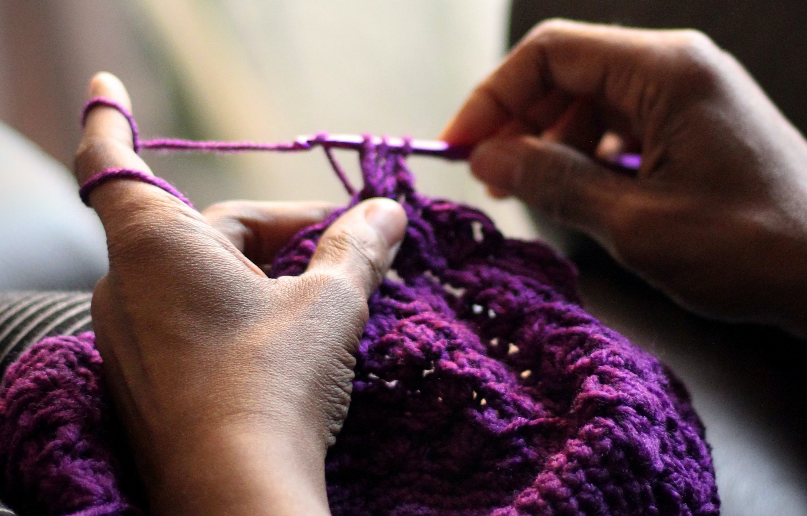
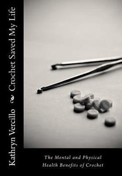

This is the start of a wonderful journey
If you're looking for a new hobby, you’ve come to the right place. Crochet is not just a hobby though, it's so much more! It can be a stress reliever, a way to make great gifts for friends, family, coworkers or an activity to get your creative juices flowing! Whether you're crocheting based on a pattern or free handing your creation there are so many different things you can make!
Here at the CrochetHut we have a ton of information just for you to be able to learn the ways of crochet! If you head over to the stitches tab you’ll learn how to hold your yarn as well as your hook, all the basic crochet stitches you will need to know for your first project. Later on you will even find that we have some more advanced stitches. Included on the page we have a list of all the supplies you will need and links to easily be able to purchase them as well as a few simple to advanced patterns to get you working on a project right away!
In the stitches tab we will give you detailed descriptions of many basic stitches, how to hold your hook and yarn, and even a small list of supplies that you'll want to buy to get started.
Here we have listed some of the many wondeful benefits of crochet. If you would like to learn more than what we have added below, we have linked a book that you can purchase that more information as well as first hand stories.

Benefits of crocheting
Crochet has been found to benefit people in many different ways, it's not just a hobby but it's also a medicine! Thats what makes crochet so special.


Here are four mental beneifts of crocheting
1. Relieves stress
Crochet relieves stress in the comfort of your own space. After a long and stressful day, you can count on crochet to ease your stress and wind down.
The repetitive motion involved in crochet decreases stress hormones and enables the secretion of feel-good hormones, serotonin and dopamine. Many scientists also believe that the repetitive and rhythmic movements involved in crochet activate the same areas in the brain as meditation and yoga do. Crochet can add a sense of balance to the stress of a high-tech, fast-paced lifestyle.
2. Calms anxiety and eases depression.
Crochet has a calming effect and is useful in treating insomnia, anxiety, and depression. According to a study done by researchers at the University of Wollongong Australia, crocheting can improve major mental health benefits, including improved focus and memory, and relief from depression and anxiety.
Many people have also stated that crochet has helped them handle and overcome grief and few have even felt happier after starting to crochet. Crochet is also useful in the treatment of asthma, and panic attacks. Also, repetitive movements have also been effective in the management of disruptive behavior and ADHD in children.
3. Reduces the risks of Alzheimer’s
The American Counselling Association found that crocheting can help those aging who may struggle with dementia and obsessive-compulsive disorder. With crochet, there is always something new to learn and develop. Besides, the coordinated movement of hands and eyes develops a new neural network that renders some sort of neuroprotection.
4. Helps with self-esteem
How would you feel about something you made yourself? Wouldn’t you pride yourself over it? This is what crochet does, it gives you a sense of self-accomplishment making you realize how worthy and capable you are.
Oftentimes, we need something to remind us of our worth. And crochet does exactly that. Besides, you can also donate your projects to charity and that provides a sense of purpose. Heavenly isn’t it?

Here are three physical benefits of crochet
1.Crocheting can improve fine motor skills and hand-eye coordination.
2.Crocheting can also provide a low-impact form of exercise for the muscles in your hands, wrists, and arms.
3.Crocheting can even improve sleep. The relaxation that comes from crocheting can help to calm the mind and prepare the body for sleep.